一个 AI 项目怎样从「一个人很快」走到「全组都快且稳」：天猫新品 MDI 的四个阶段
天猫技术团队用自己做 MDI 项目的经历，讲 AI 研发能力怎样一层层放大：先让一个人变强，再让小队并行不打架，再防止高速迭代把质量拖垮，最后让产品、设计、测试也能安全地改代码。
公众号原文 精读版（加密，需密码）本页导读约 25 分钟
文首摘要把四段路先列了出来：一个人攻坚时，靠结构化知识库让 AI 吃透项目；加人时，按站点地图切分地盘，用 Spec 变更规则和 MCP 补上下文，避免互相踩踏、推理断链；迭代加速后，放一台独立的「技术哨兵机」还原预发的合并状态，让云端 Agent 找出隐形的业务冲突并告警；稳定之后，用云端平台 NekoCollar（沙箱、真实页面代理、Git 软硬双锁）让非研发角色也能安全参与。

效率要从「个人碰巧」变成「团队能复制」，才谈得上规模化
作者的判断：AI 带来的生产力不是自上而下一次到位的革命，而是从一线长出来、再逐级向组织扩散的曲线。只有当效率能被团队复制，而不是某个人偶然做到，AI Native 的做法才可能跨团队、跨业务推广。
这几个月团队在做全新的业务项目「天猫新品 MDI」，一路演进下来，正好走过 超级个体 → 超级研发小队 → 超“稳”研发小队 → 超级项目组 这几步。
项目里多人同时用 SDD（规格驱动开发）做高频敏捷，雷打不动每周上线一个大版本；最夸张的一次上线，预发上同时有八个仓库、十几个分支在一起集成。文章就讲这四段里踩的坑和对应做法。
它的复杂度很高：这是个全栈平台，横跨 4 个角色端，功能模块大约 40 个；外面还挂着智能投放系统、算法内核和自动化评测体系，并依赖阿里云百炼全模态等外部服务。
作者说这个初创项目几乎踩中了「AI 时代项目」的全部典型特征，并把它分成四期：单兵攻坚期（一个人怎么开荒新领域、新知识）、加人提速期（单人效率怎么复制到多人）、高速迭代期（时间和规模让 AI 研发质量变差，怎么化解）、稳定运作期（全组怎么共享上下文，让非研发角色一起出力）。
四期合起来是一个朴素问题：怎样把能力放大。第一步让开发者成为「超级个体」，第二步让这些人组成「超级研发团队」，第三步让团队能持续跑下去，第四步把研发能力扩散到组里每个非研发同学。一句话：从个体到团队，再到可持续，最后到全员。
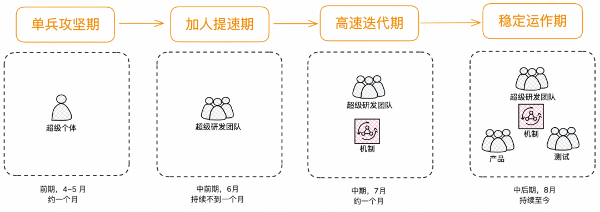

用结构化知识库让 AI 从第一天就懂项目
问题 · 怎么让 AI 在陌生领域开荒
原文 · 问题：如何驱动 AI 在新领域、新知识上开垦？项目刚起步只有一两个人，领域又是全新的。一个人干活时最痛的不是不会写代码，而是 AI 根本不了解这个项目：业务地图、踩过的坑、为什么选这个技术方案，它都不知道；每开新会话都得把背景重新灌一遍。
解法是用一个结构化知识库把整个全栈项目串起来，让 AI 随时都能读懂项目，团队把这套 SDD 研发体系叫 collar（项圈）：意思是给自由的 AI Agent 套上边界和知识。名字也有来历：团队有一系列产品，名字都带 neko（日语里的「猫」），如 neko、nekoClaw 和后面会讲的 NekoCollar，而 collar 就是猫戴的项圈，也就是 harness。
手段一 · AGENTS.md 是全栈地图
原文 · 手段一：AGENTS.md，任何时候都尤为重要的 AI 编码全栈地图根目录放一份 AGENTS.md，它是 Agent 进项目的唯一入口。文件开头写了一条铁律：自己只是入口地图，篇幅不超过 120 行，不写细节，只指路。
MDI 的工作区由多个仓库聚合而成（即 multi-repo workspace）。里面有 Java 后端（分 DDD 四层）、前端主应用、5 个微应用/H5，还有评测的执行端（Node）和服务端；每个都是独立的 git 仓库，一起放在 workspace-mdi/ 下面。
AGENTS.md 用几个短板块把这些串起来。仓库地图：带注释的目录树，7 个子仓库各自的用途和端口、谁是「唯一开发入口」、谁「已废弃禁止改动」，一眼可见。
快速命令：各应用怎样启动、build、lint，AI 不必去翻每个仓库的 README。
速查表（关键约定）：把踩坑后才定下的强约定压成「一句话 + 详见链接」，例如时间统一按北京时间格式化、新日志必须用 BizLog、新接口用 MTOP 注解、改代码前先读 PITFALLS。
当前状态表：每个应用的完成度和已有能力的快照，让 AI 知道项目推进到哪了。
| 约定 | 一句话 | 详见 |原文代码节选：第 1 行（共 6 行），即速查表的表头；完整代码见精读版。
速查表原文是四行：时间字段展示、日志体系、MTOP 路由、踩坑必读，每行分别指向约定文档、ADR-013 或踩坑文档。
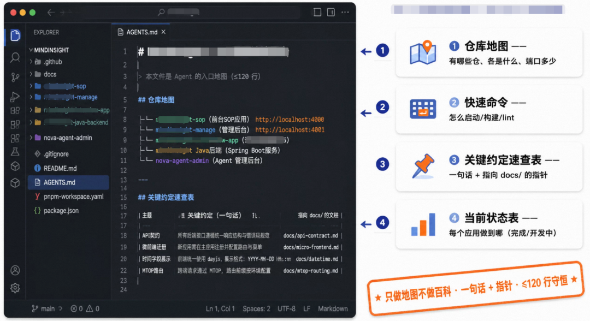
行数由 collar-runbook 这个 skill 主动把关：快到 115 行时就提醒把细节挪进 docs/，入口里只留一行摘要和链接，让地图始终短而可信。
手段二 · 六个 Skill 管六层知识
原文 · 手段二：六个 Skill 全方位管理知识库的六个层级只有约束不够，还得回答「知识写到哪、什么时候自动写」。团队把知识库在 docs/ 下切成六块，每块各配一个专属 Skill（都以 collar- 开头），模块、Skill、README 一一对应：specs 是业务地图，changelog 是做过和要做的时间线，架构模块讲系统之间怎么连，runbook 是零散过程知识，vendor 是挑选同步的外部源码，wiki 是人工维护的自由知识。
docs/原文代码节选：第 1 行（共 7 行），即目录名；完整代码见精读版。
最要紧的设计是：这六个 Skill 有的主动触发、有的被动触发，自动化程度是一级级递减的。
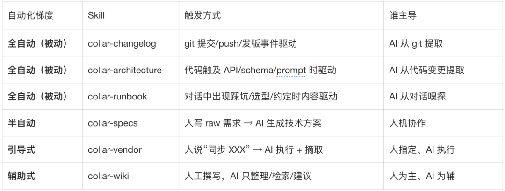
背后的信条：Agent 看不见的知识，就当它不存在。所以知识都要版本化写进仓库文件，一发生就自动落进 docs/，下个会话或下个人拉代码就拿到完整上下文。
做一个 Skill 不难，难在多个 Skill 互不冲突还能配合。团队把 git commit 设成统一的触发关口：每提交一次，就有三个 Skill 同时从三个互不重叠的角度往知识库里补：collar-changelog 记录这次做了什么，collar-runbook 提炼学到了什么（坑和约定），collar-specs 检查代码有没有偏离意图，把差异列出来交给人定。
这个强制是真的强制：沉淀知识从「看自觉」变成「流程关卡」，没有「这回先算了，下次一定」的退路。作者的理由是，知识库一欠账就会很快烂掉。
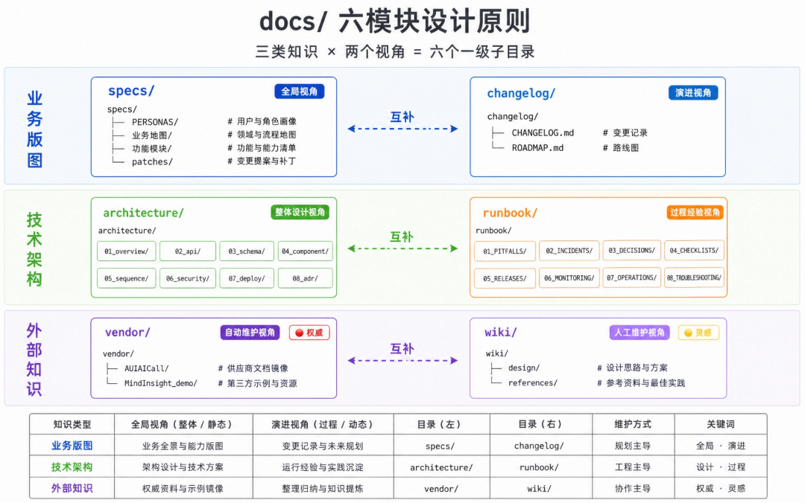
手段三 · 人工、自动两路冷启动
原文 · 手段三：人工与自动双方式实现知识库冷启新领域前期调研最考验知识的冷启动。知识分两类：靠人维护的和自动维护的。设计理念、竞品分析、蓝图调研（blue-print）这类要靠个人保证质量的，放进 wiki/；另外三层（时间线、架构连接点、过程知识）由 AI 从 git、代码和对话里自动抽取。
像官方 demo 这样的外部参考代码走 vendor/，原则是只做减法，只拉自己要的。collar-vendor 规定了两种同步办法，外加一套挑选算法。更巧的是 vendor 也给 collar-specs 当实证参考：specs 写技术方案时会自动扫相关 vendor，摘出代码模板、API 用法和架构模式写进方案，并注明出处。skill 里有句点题的话，大意是用户放进来的代码未必细读过，这一步替用户「读」并提炼要点。
于是调研时随手扔到 vendor、wiki 里的粗素材，等到真正做设计，会被 AI 自动捞出来参与决策。
手段四 · 给 AI 套项圈（还在推进）
原文 · 手段四： 给 AI 套一个「项圈」（渐进实现中）除了 AGENTS.md，根目录还有一份 collar.yaml。作者坦言它还在随 nekoCollar 逐步落地，所以只讲思路：项圈分三层。Identity 是身份和知识入口，告诉 AI 自己是谁、去哪读知识；Boundary 是边界约束，规定能碰和不能碰的东西，核心原则是 deny-by-default，即默认拒绝；Validation 负责验证，是改完代码必须通过的门禁：lint 和 typecheck。合起来看：Identity 决定 AI 知道什么，Boundary 决定它能改什么，Validation 判断它改得对不对。虽然 collar.yaml 没写完，这三层已借助 AGENTS.md、pre-commit hook 和后面的软硬双锁在多处生效。
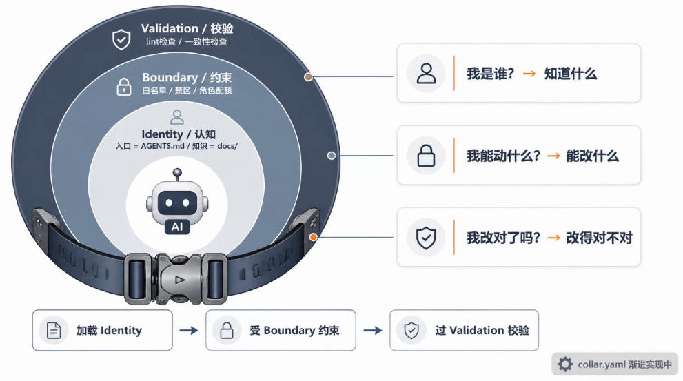
小结 · 超级个体
原文 · 小结 - 超级个体篇入口地图、collar 三层约束、六个知识模块和六个 Skill 一起，把整个全栈项目有结构地交给 AI；一条有纵深的知识生命周期让 AI 从第一天就「懂」项目，也给后面加人打好地基。

划清地盘防冲突，缝补上下文防断链
问题 · 怎样把一个人的效率复制给小队
原文 · 问题：如何把超级个体效率复刻到整个研发小队上一个人攻坚一个月后项目开始加人，问题变成：单人效率怎样复制到多人协同。多人最怕两件事：冲突，几个人改到同一处；上下文断裂，为了工程规范把逻辑挪到外面，AI 就看不懂了。
手段一 · 照站点地图划地盘
原文 · 手段一：借鉴 Web2.0 的站点地图，物理隔离分工Web2.0 早期做网站，上线前要先画 sitemap，也就是站点地图：有哪些分区、每区有哪些页面，然后各人认领页面并行开发。它的价值是动工前就把系统的疆域横向摊开、划分清楚。
团队把这个老办法用到 AI 研发上：MDI 的站点地图就是 docs/specs/，按业务地图横向展开，00 是站点整体骨架，01–05 依次是管理端（16 个功能模块，最重）、用户端（6 个）、小二端（14 个）、专家端（1 个）、评测端（2 个）。对应关系是：一个业务地图就是一个分区，一个功能模块就是分区里的一个页面或功能区。
docs/specs/原文代码节选：第 1 行（共 7 行），即根目录名；完整代码见精读版。
数字前缀让目录天然排好序。每位同学开工前，先确认他负责的前台路由和后台 API 领域，以及产品模块、spec 范围；超出边界的协同都要先和项目组对齐。
手段二 · 四种变更类型
原文 · 手段二：四种变更类型满足所有需求演进行为版图划好后，每次具体改动按四种需求迭代类型来组织。
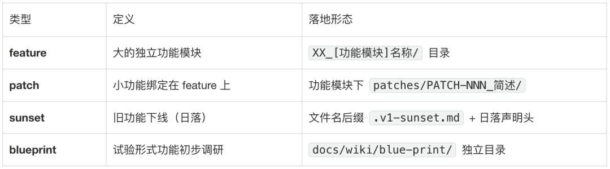
以「管理端/创建访谈」为例，一个 feature 有三级：feature 目录下放只追加的原始需求 raw提示词.md、主 spec（技术方案文档），以及 patches/ 目录，里面挂着 PATCH-001 到 PATCH-011 共 11 个补丁，如 TPP 同步代理接入、TPP 异步代理接入。
01_[业务地图]管理端/原文代码节选：第 1 行（共 8 行），即业务地图目录名；完整代码见精读版。
这里有层次之分：feature、patch、sunset 都在正式规格层 docs/specs/，blueprint 却特意放进自由探索层 docs/wiki/blue-print/。蓝图是还没决定怎么写成 spec 的能力构想，文件名前缀表示成熟度，依次是调研、讨论稿、技术方案，一直到 V4-MVP；调研成熟了，才「毕业」搬进 specs 变成正式 feature。
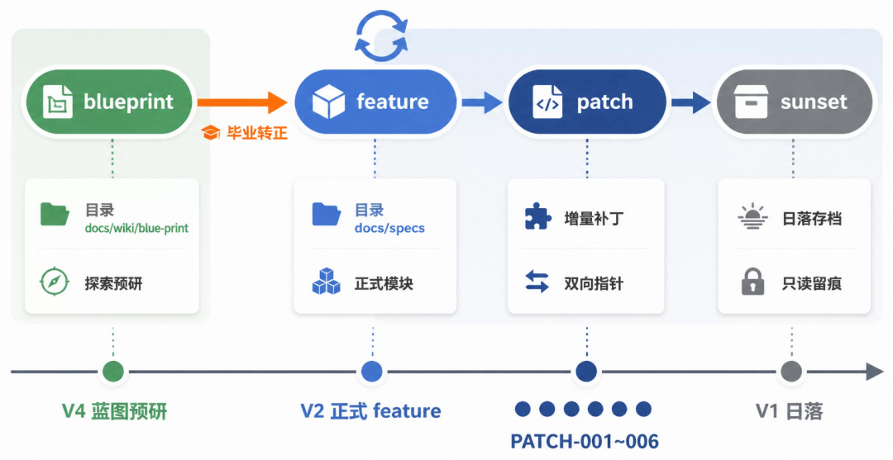
为什么这样切人就自然分开了？三点：一是目录就是认领单位，A 领「创建项目」、B 领「项目循环」，spec 目录物理隔开，冲突降到最低；二是patch 让并行互不干扰，小改动走补丁，多人能在同一 feature 下同时提 patch，主 spec 等稳定了再收拢；三是生命周期清楚，前期大设计走蓝图，下线走日落，稳定的功能就用 feature 加 patch。
第一条关键规格是双向指针。它解决主文档和补丁之间说法不一的问题。patch 替换主方案某段时，若只在 patch 里写「改了 X」，看主文档的人不知道；若只在主文档里划掉 X，看 patch 的人不知道前因后果。所以强制两头都留指针：patch 开头写「覆盖范围」，用表列出被替代的段落、原方案和新方案（例子里一个 SSE 流式调 DashScope 的接口被弃用，转用通用 TPP 代理）；主文档里被替代的段落加删除线，并注明已被哪个 PATCH 替代（原文这里是一个仓库内相对链接 仓库内链接，公开页打不开）。
## 覆盖范围原文代码节选：第 2 行（共 9 行），即「覆盖范围」小标题；完整代码见精读版。
还要求 每个 Patch 单独读也能看懂，不预设读者先看过主文档。这对 AI 很友好：从哪个文件切进去，都能拼出当前真正生效的内容，不会被过时描述带偏。
第二条关键规格讲 sunset，让旧功能体面退场。旧功能下线若直接 git rm，历史上下文就永远没了，以后查灰度期的线上问题会两眼一抹黑。真实案例：用户核心循环原来是 V1 自建的 LLM Agent，后来迁到算法团队的 TPP 服务，旧文档顶部加了日落声明：2026-05-26 开始迁移，文档进入凝固期，不再改内容、不再加 PATCH（V1 时期那批 PATCH-001~006 都封存了），但仍可阅读用来排查灰度问题；决策记录在 ADR-010；等 V2 全量切换并稳定 1 周后，文档和关联的 V1 文件才会被 git rm。
> 迁移决策：ADR-010原文代码节选：第 7 行（共 8 行），即迁移决策那一行；完整代码见精读版。
作者说这个模块是全项目最好的主线案例，四种类型都经历过：V4 全双工方案处于 blueprint 预研，V2 是正式 feature，V1 时期的 patch 有 PATCH-001~006，V1 整体进入 sunset 日落。核心观点：sunset 不是删文件，而是一份可执行的迁移脚本，带着状态机。
手段三 · 提交时提醒代码偏离 spec
原文 · 手段三：提交时，代码到 spec 的反向提醒版图划好了，代码写着写着仍可能偏离 spec。所以提交时会有一个 skill 把代码和原始 spec 对一遍。设计哲学是：Spec 是意图的源头，比代码出现得早；代码和它不一致未必是错，也许是写代码时找到了更好的办法。
因此提交时不会自动去改 Spec，只列出差异清单，让人拿主意。例子里差异点是字段类型：Spec 写 status 是 String，代码实现成 Integer 枚举，建议反向更新 Spec；用户对每条差异三选一：以代码为准更新 Spec、Spec 不动（代码以后改回来并记 TODO）、先搁置。
用户逐条决策：原文代码节选：第 5 行（共 8 行），即「用户逐条决策」那一行；完整代码见精读版。
这样「文档该不该变」不再被悄悄忽略，而成了必须明确做的决定。再加上工程上的 lint 门禁和 collar-changelog 的强制要求，于是有了两道保险：Agent 管语义检查，git hook 管质量检查。
手段四 · 上下文缝补
原文 · 手段四：上下文缝补作者觉得这一段最值钱。多人一起干久了，为了发布效率，大家会照工程惯例，把写死在代码里的东西（如 prompt 逻辑）挪到 Diamond、DB 等持久化介质里，配置和代码分离，传统研发里这是标准做法。但在 AI 研发里，这是个不易察觉的陷阱。
以前提示词就在代码里，codeAgent 一看代码就明白那个 Agent 的做法；挪到 DB 后，代码里只剩 promptService.load(agentCode) 这样的调用壳子，codeAgent 就看不出它的实际行为，关键决策上会判断错，或者回一句「我不清楚这个 Agent 具体怎么做，请到对应平台改提示词」。这就是推理链断裂：以为做了工程优化，其实在 AI 的上下文上捅了个洞，研发效率断崖式下降。
项目组于是定下原则：凡是让上下文出问题的研发架构改动，都必须用合适的办法把缺掉的上下文补回来。
更深一层的认识是：AI 时代人介入越少效率越高，所以 AI 的上下文始终决定效率（作者特意提醒：说的是效率而非质量）。DB 类 MCP 之所以好用，是因为有了它，业务链路又连上了，codeAgent 的上下文也全了；查询类研发 MCP 的价值，就是把挪到 DB 的逻辑重新放回 AI 眼前。作者接着给了三个真实缝补案例。
案例一：用只读的 MCP 查询，把挪到外面的动态 prompt 与 skill 找回来。MDI 有一条多 Agent 生成报告的管线，它的 prompt 内容不写死，而是放在 Prompt 工作台里动态维护、单独发布，代码只剩调用框架和数据流，是典型的上下文缺口。团队专门给 MDI 做了个 MCP Server，这个 Server 的工具都是只读查询，共 20 个；分组里第 7 组叫「Prompt 工程」，专门凭原有锚点去查此刻生效的提示词或 skill：查某场景下每个 Agent 正在用的 prompt 版本、按 promptId 取 Mustache 模板全文、查版本历史、查每个 Agent 实际的输入输出和耗时。
# mdi-query MCP —— Prompt 工程组（缝补核心）原文代码节选：第 1 行（共 5 行），即这组工具的标题注释；完整代码见精读版。
这样 codeAgent 随时能拿到当前真正生效的 prompt，「请你去平台自己改」那种断链就不会再出现。
但工具能查，不等于 AI 知道该去查。所以另配了一个 skill，相当于 MCP 的说明书，教 codeAgent 主动补齐上下文，回答三个问题：何时查（skill 里写了触发条件，碰到相关上下文就主动调用，不等人提醒）、怎么查（固定四步调用链，锚点是场景码加 Agent 码）、查到怎么用（补充 MCP 数据的含义，帮 codeAgent 用好）。
两样凑齐，缝补才算闭环：MCP 属能力层，给出只读可达的通道；skill 是认知层，规定何时、如何取用。这样 codeAgent 会主动按对的锚点把外置的上下文拉回来，而不是能力摆在那却想不起用。
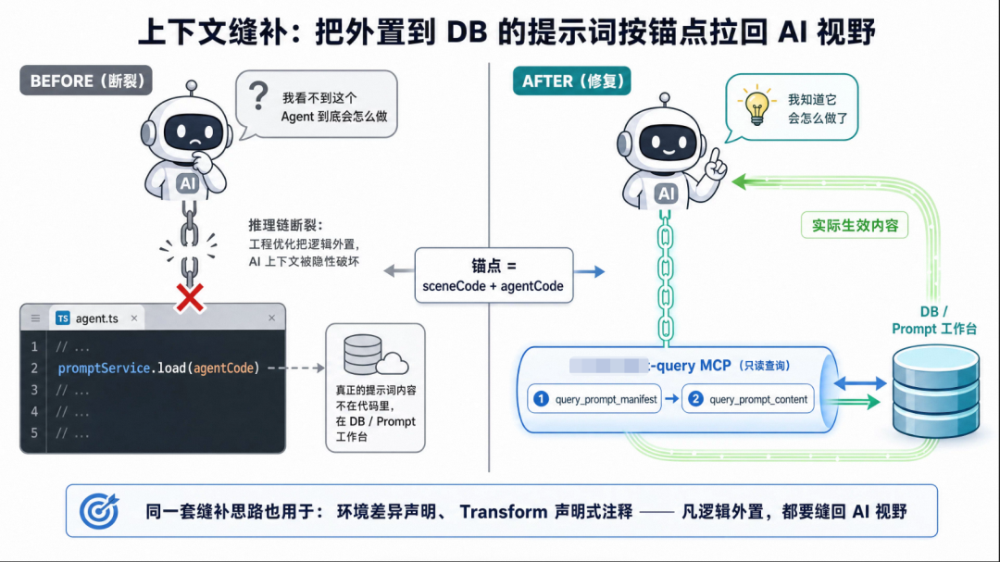
案例二：在 AGENTS.md 里写明预发和线上的环境差异。这些差异对 AI 是看不见的地形，排查预发问题时会碰到代码明明对却不生效的怪事。补法是在 AGENTS.md 的关键约定速查里明确告诉 codeAgent 环境有差异、遇到解释不通的问题先怀疑环境，细节记进 ADR。
案例三：Transform 脚本靠注释留锚点。部分运营逻辑放在 Transform 平台的 Groovy 脚本里，但用一套 //! 开头的声明式注释把锚点留在代码中：Groovy 当它是普通注释，平台把它当元数据，代码本身就是锚点。AI 读脚本源码，就能拿到名字、风险等级、参数、可运行的环境这些信息。同样是「逻辑外置，但保留可解释性」。
小结 · 超级研发分队
原文 · 小结 - 超级研发分队篇一套站点地图加四种变更模式，让多人一开工就各干各的，冲突面压到最小；上下文缝补保证工程优化不拿 AI 上下文做代价，任何让上下文出问题的架构改动都要补回来。
冲突只在合并处露面，就派一台机器专盯合并处
问题 · 高速迭代时质量怎么不滑坡
原文 · 问题：高速迭代期如何确保研发小分队质量不劣化？第三阶段大家效率都上去了，节奏提到每周发一个大版本，预发上十几个分支并行。新瓶颈是：人和人之间交换新上下文的速度跟不上。比如有人上午动了后端接口的签名，另一个人下午改前端的调用，两边本地都没问题，合到预发就在业务逻辑上打架，有时过很久才爆，甚至变成线上故障。
这类「隐形冲突」会随人数和速度成倍增长，作者称它是 AI 研发质量变差的头号元凶，得有一套新的上下文交换办法。
手段一（失败） · 盯编码过程
原文 · 手段一（一次失败的尝试）：Agent Manage（编码态监控）最初的想法很直接：既然要同步上下文，就把每个人本地写代码时给 Agent 的输入、Agent 的回答都收上来，在写代码阶段就掐掉冲突。于是做了 nekocollar-app（即 Agent Manage 方式）：相当于全局采集 codeAgent 信息的工具，能监听 claude code、cursor、qoder 这些 agent 进程，把 AI Coding 的信息全量收集管理（作者说这类做法在开源和公司内部都很常见）。设想是每位同学装一个本地 app，监听所有按 collar 模式跑的项目，从中提取协同信息、提前判断冲突。
跑下来遇到两个致命问题，作者直说这部分失败了：一是噪音太大、信噪比很低，代码 release 之前的本地编码充满不成熟的尝试，写了删、改了又改、和 AI 来回对话，这些过程信息大多没用；二是成本太高，监控每个人本地的输入输出要耗费惊人的 token，而且每人工具和习惯不同，Agent 行为很难统一监控。
事后复盘的根因很清楚：介入的时机选错了。编码阶段意图还没定型，信息最乱、最不确定，拿它做冲突检测代价太大。
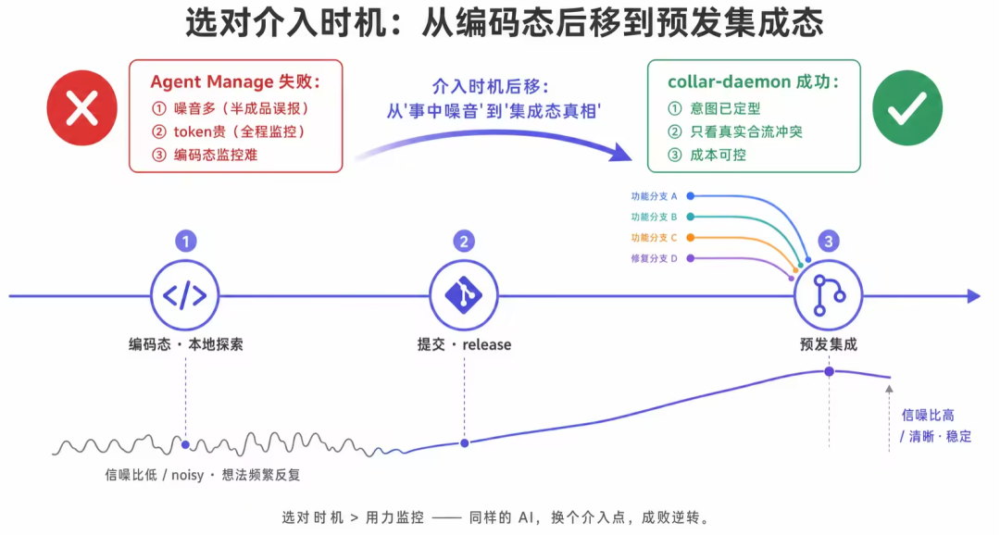
手段二（成功） · 在预发集成态检测
原文 · 手段二（这次有戏）：把触发节点放在预发检测上，还原一个“谁的开发机都没有的”最终运行环境复盘后，触发点从编码阶段挪到预发集成阶段，collar-daemon 上场。它是跑在一台独立机器上（目标是一台 Mac mini）的常驻守护进程，定位就是团队研发质量的哨兵。技术栈极简：原生 Node.js，零外部依赖，只用 Node 自带的模块（如 https、net、fs），放到 Mac mini 上部署时连依赖都不用装。作者给的理由：一是想尽快做出来，二是功能稳定后还要考虑搬到云端。
它做三件事，首尾相连：还原代码环境，线上、预发两套工作区里的每个子仓库都持续同步到最新；检测业务逻辑冲突，预发一有新提交，就把谁改了什么交给云端 AI Agent 找隐形冲突；告警闭环，发现冲突就用钉钉机器人加 AI 表格在群里通报。
各人本地只有自己改的那部分，分支也各不相同。所以多人协作时，除去集成环境，任何一台开发机都没有「所有人最新提交合起来」的完整代码，而冲突恰恰只在这个合起来的环境里露面。
collar-daemon 在独立机器上持续把两套工作区拉到最新：配置里有线上和预发两个 workspace，各自轮询，线上 600 秒一次、全部 master，预发 300 秒一次、各仓最新 release，预发更勤。
workspaces: [原文代码节选：第 2 行（共 5 行），即 workspaces 配置的开头；完整代码见精读版。
关键在预发：每个子仓库单独去找 release 分支里最新的那条，而不是全体切到同一个分支。办法是把远程分支按提交时间从新到旧排好，按前端仓、后端仓各自的 release 命名规则去匹配，取第一个命中的；一个都没有就退回 master。
]);原文代码节选：第 6 行（共 11 行），即这个发现函数的声明；完整代码见精读版。
结果是前端、后端各仓都停在各自最新那条 release 上，本次要上预发的各服务代码，实打实都落在一台机器上的一个工作区里。这里没用 git merge 合出临时分支，而是让工作区本身摆成「预发合并态」：一个能运行、AI 能通读的完整快照。预发每 300 秒轮询一次，这份镜像跟着团队提交实时更新；也不用人告诉它本周预发分支叫什么，它会自己切到最新的预发状态。
为什么要一直保有 release 集成态？例子：A 改了接口签名，B 正好调用它，两人分支都编译、自测通过，只有合起来才暴露签名不符；又比如一人改了共享 Prompt 里槽位的 key，另一人仍按旧 key 读，各自都对，合并后线上静默读不到、悄悄失效；DB 字段变更、并发时序、共享配置等也一样：放在单个开发分支上永远看不出，只有集成后才暴露。
所以只有在「所有人最新提交合在一起」的代码上查，才能抓到藏在合并处的真问题。冲突只会在 release 集成分支上露面，哨兵机就是 24 小时守在那里的人。
作者强调这不是纸上谈兵：下面是哨兵机在集成态上真实报出来、而在各人自己的分支里根本查不到的例子，报错类型不止一种。
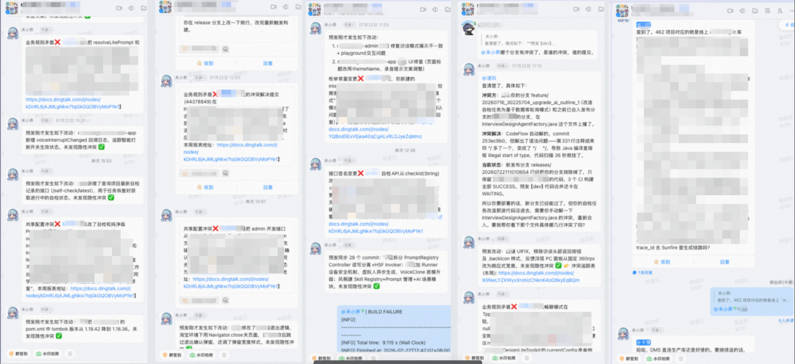
哨兵机不是逢提交就报，只有真有合并风险时才 @ 到具体负责人，作者说这正是它信噪比能保持在八成以上的原因。
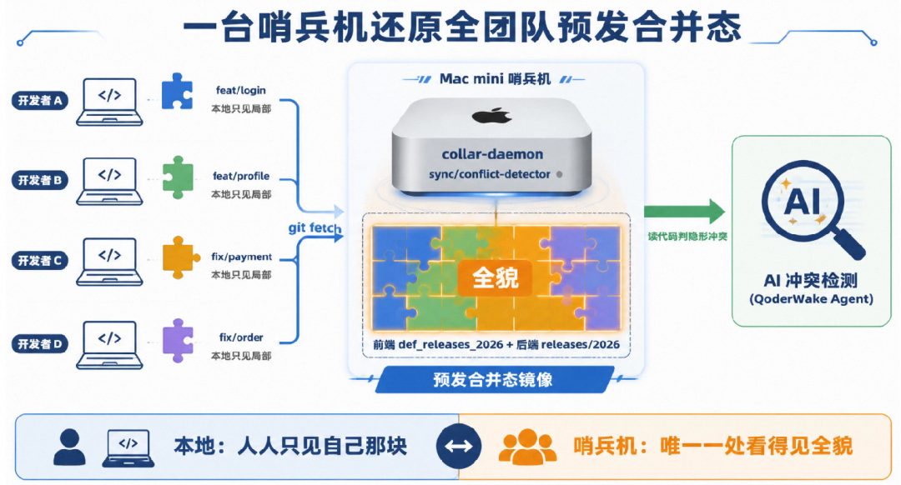
采集信息时从不阻塞、也不破坏本地工作区。它精确取出每次新提交的作者、提交说明（message）和改动文件，按仓库分组交给 AI，每条都突出提交人名字，因为多人排查冲突时，「谁改的」是第一条线索。
手段三 · 发现、处理到钉钉留痕
原文 · 手段三（深挖）：从 daemon 发现，到 QoderWake 处理，再到 钉钉 留痕daemon 本身不做规则判断，也不内嵌 prompt，只负责把整理好的结构化上下文 POST 到云端，交给 QoderWake Automation Agent 判断冲突。prompt 编排这类常变的智能交给云端，本地进程就不必依赖任何东西，也能长期不改、保持稳定。
QoderWake Agent 拿到提交上下文和完整代码后综合分析，确认冲突就发群告警并写入 AI 表格，在钉钉里，相关的人能直接看到谁的哪次提交和谁撞了。日常的跨人代码排查、trace 检查，以及版本更新日志里的业务逻辑冲突，都是同一条 Agent 分析链路在不同维度上的产出，形成闭环。
一个工程小技巧：QoderWake 管理界面只绑在 127.0.0.1 上且改不了，团队在别的机器上访问不到。collar-daemon 用 net.Server 加 pipe() 做了端口相同、IP 不同的 TCP 透明转发：让本机回环地址上的 19820 端口在内网 IP 上也能访问，改不了绑定也照样能用，全队都能远程看哨兵机界面。具体是每来一个连接就连到上游、两头互相 pipe；监听开在内网 IP 上，和回环地址各用各的。
});原文代码节选：第 6 行（共 7 行），即双向转发中的一行；完整代码见精读版。
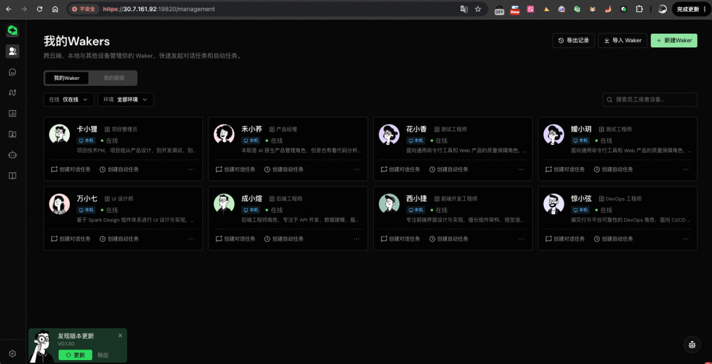
如果检测完只在群里发一条消息就算了，作用很有限：消息会被刷走、没人跟、也没法度量。所以每轮产出的冲突都写进一张钉钉 AI 表格并做状态流转，把「发现问题」推进到「闭环问题 + 质量可度量」：每条冲突是一条记录，相关同学看后把待回复改成「问题存在」「误报」「已修复」之一，既关掉问题，也反过来校准 Agent 的准确率；北极星指标定为周冲突有效发现率，即报出的冲突里被人工确认为真问题的比例。
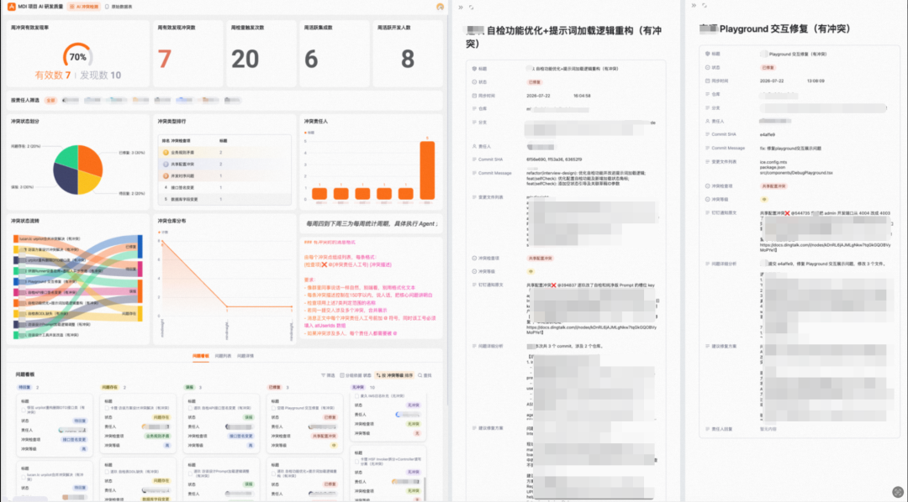
运营一段时间后的效果：业务冲突的有效发现率一直超过 70%，报出来的七成多是真问题，和之前本地检测比，信噪比从「没法用」变成「八成命中」；每周能抓出 40+ 个真的多人协作隐患，这些散在各人机器上、单看自己根本看不到；团队心态也变了，哪天「禾小荞机器人」没发冲突检测，大家反而心里发慌，怕哪里埋了雷没发现。作者认为，大家对一个 AI 工具产生「没它不踏实」的依赖，说明它真嵌进了研发流程。
小结 · 高维哨兵机器人
原文 · 小结 - 高维哨兵机器人篇用一台零依赖的哨兵机，拼出任何人的开发机上都没有的预发合并态，再请云端 Agent 检查每批新提交有没有隐形冲突；发现率保持 >70%，每周都有 40+ 个真隐患被揪出来，项目组已离不开它。
约束要随参与者变硬：让非研发同学安全地改真实页面
问题 · 非研发同学怎么办
原文 · 问题：研发的效率和质量提升了，那项目组里的非研发同学呢？项目稳定后，团队看到更大的机会：这份效率和稳定性，能不能也交给组里不写代码的同学？像测试、产品、设计同样要理解代码、要在现有系统上提改动，也需要一个所见即所得的编辑体验。
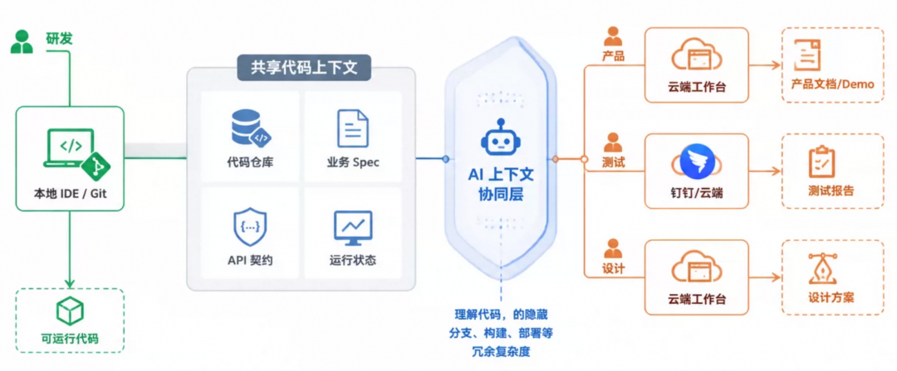
为什么各角色都要围着代码协作？因为代码是离用户真实体验最近的「可执行事实」。产品文档说希望发生什么，设计稿说用户该看到什么，测试用例说系统该满足什么，这些都是最终系统在不同方向上的投影，传下去时会被技术限制、接口怎么实现、运行环境和历史兼容所改变，用户最终碰到的是代码和配置真正跑出来的行为。作者的说法是，互联网各工种多年来其实一直围着「代码」这个最终产物做中心化协同。
如果协作只在上游文档之间转，信息差会沿着交付链越积越多；得让产品、设计、测试的判断不断回到代码和运行状态上去校准，才能早点发现「产品以为做了、设计以为能还原、测试以为测全了」和真实系统的差距。在用户看到行为之前，代码上下文是最后一份可以版本化、追踪和验证、大家共用的事实。所以围着代码协作的意思，并非让每个人都去用 Git，而是让各角色都以最终能执行的事实为依据。
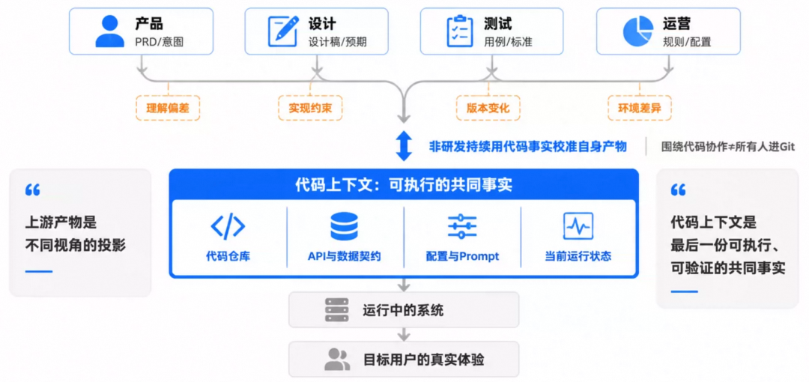
可直接把 git 权限和 AI 写代码的能力给不写代码的角色风险太大，一次手滑就可能把代码库弄脏。所以团队在做 NekoCollar：一个云端的上下文协作系统，打算让测试、产品、设计和研发一起用上同样的效率与稳定性。NekoCollar 算是把 collar SDD 体系平台化，前面 collar.yaml 里那些平台扩展占位字段在这里开始生效。作者把这看作非研发人员参与「代码开发」的终局形态。
前三章解决的都是研发之间的协同，参与者都懂代码、懂 git，有工程素养，约束可以偏「软」，靠文档、规范和自觉。范围扩展到测试、产品、设计后，这些人不需要懂代码，但又得能安全地在代码库上表达意图，约束就得由软变硬，因为不能指望一个不懂 git 的产品经理记得「别往主干 push」。参与者工程素养越低，系统约束就要越硬，这是本章和前三章最根本的不同。
NekoCollar 的设计哲学一句话：效率做加法，稳定性用物理手段卡死。下面分效率和稳定性两条线。
设计思想一 · 效率线
原文 · 设计思想一：效率线，让非研发角色也能“上下文编排式协同”云端沙箱一键开工，把上下文「物化」出来。非研发同学不用在本地配环境，系统在云端 Aone 沙箱里自动拉起环境，用的是一条 @Async 异步五步流水线（编排器名为 WorkspaceProvisionOrchestrator）：创建实例（同步返回 instanceId）、起沙箱、装 claude-cli、准备工作目录、恢复对话记忆、启动 Bridge 和 Claude Agent、连上 Agent 进入 RUNNING。要注意 Step3：知识库先 clone 下来当外层，代码仓再 clone 到它里面，这正是团队研发时真实用的上下文环境。
Step2 CREATING_SANDBOX（Aone SDK 起沙箱）原文代码节选：第 2 行（共 7 行），即流水线中的一步；完整代码见精读版。
所见即所得的编辑体验，作者说这是和其他全栈研发平台最不同的地方。市面上「让 AI 改前端」的产品大多要么只能在单独的沙盒预览页看，要么只给一段 diff 让人脑补，都不是真实页面，产品和设计看到的始终是仿真环境，和线上真正运行的页面隔了一层。
团队花大力气做的，是让产品、设计等同学就在预发或线上的真页面里，实时看到 AI 在沙箱中改出来的效果，链路分四步。第 1 步，在沙箱里起一个真正的 dev server：工作空间开机时，给设置过 devServerPort 的前端仓库在 Aone 沙箱里后台启动开发服务器，就是平时本地用的 npm run start（先清端口，再从 npmmirror 镜像源装依赖，然后监听 0.0.0.0）。
+ "cd '%s' && nohup sh -c '"原文代码节选：第 4 行（共 8 行），即进入仓库目录并后台启动的那一行；完整代码见精读版。
第 2 步，对外暴露端口并在 NekoCollar 登记：用 Aone Sandbox SDK 把沙箱内端口映射成外部能访问的 URL，写进工作空间实例数据完成登记，平台再提供一个专给浏览器插件用的接口，返回每个 dev server 的映射；这里不读缓存，每次实时重新取 endpoint，保证拿到最新可用地址。
// Service 里不是读缓存，而是实时重新 getEndpoint，保证返回最新可用端点原文代码节选：第 4 行（共 4 行），即「不读缓存、实时取端点」那行注释；完整代码见精读版。
第 3 步是最关键的一步，由浏览器插件 nekocollar-extension 自动做代理：用户在浏览器里打开预发或线上的真实页面，插件先向 NekoCollar 后端要到当前空间里各 dev server 的对应关系，再动态加上重定向规则，把页面原本从 CDN（g.alicdn.com、dev.g.alicdn.com）取的前端资源改由沙箱里的 dev server 提供。规则仅对 NekoCollar 页面起作用，严格限定在当前标签页，不影响别的页面，并有 20 秒 TTL 缓存加轮询刷新，endpoint 变了能及时跟上。规则按仓库在 CDN 上的路径做正则匹配，覆盖脚本、样式、图片、字体和 xhr 请求。
priority: 1,原文代码节选：第 4 行（共 11 行），即规则的优先级字段；完整代码见精读版。
第 4 步是闭环：产品或设计在沙箱里和 codeAgent 对话改页面，热更新由 dev server 完成，插件让真实页面改从沙箱取资源，用户打开的就是预发或线上的真页面，结果马上可见。既非仿真、预览，也非 diff，变化就发生在真实页面上，跟研发平时本地做全栈开发的感受一样。原来只有研发用 whistle/charles 本地代理才能做的「调试真实页面」，现在零门槛交给了非研发同学，产品经理不用装环境、不用懂代理配置。
服务端的改动怎么办？前端资源能靠热更新加代理即时看到，但如果改动涉及后端接口（例如 codeAgent 顺带改了一个接口返回的结构），就不能马上生效：服务端改动真要上预发/线上，受发布流程的时间和部署复杂度限制，构建、审批、部署一轮常常要几分钟甚至更久，对边改边看来说太慢。规划的取舍是：服务端改动也交给浏览器插件，在浏览器里截下请求，返回修改后的结果，不等真正发布，页面上马上能看到数据变化。敢这样做，是因为非研发场景对后端逻辑的改动影响面可控。作者特别说明：已做实的只有前端静态资源的代理，服务端接口 mock 还在规划。
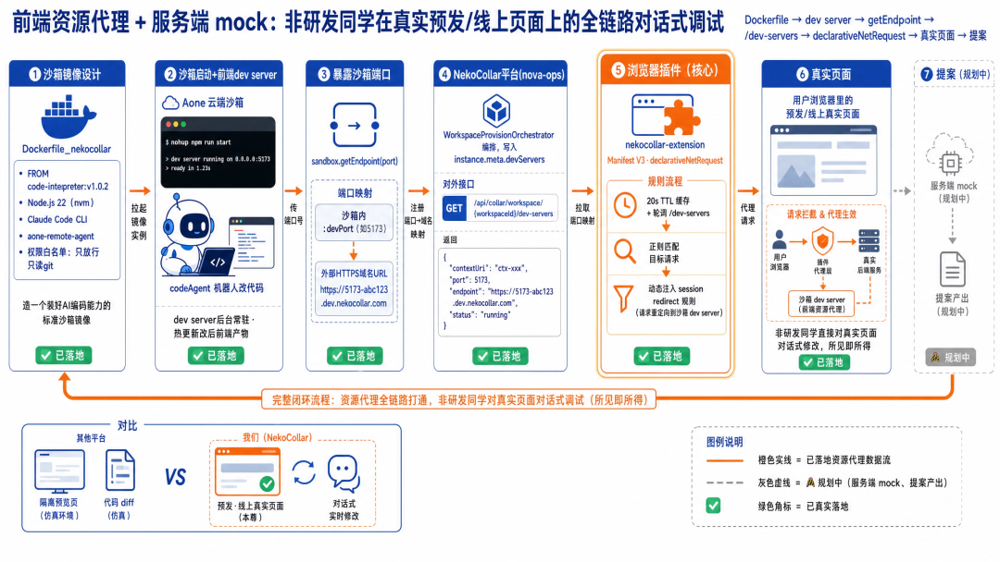
设计思想二 · 稳定性线
原文 · 设计思想二：稳定性线，软硬双锁把危险操作变成“物理不可能”这部分属于 NekoCollar 的 harness 层。硬约束（协议层，绕不过去）：clone 完立刻废掉推送地址。代码 clone 进沙箱后第一件事，是逐个仓库改掉推送地址，指向一个并不存在的仓库名 PUSH_DISABLED；之后再执行推送，git 会直接报 fatal，说 PUSH_DISABLED 不是一个仓库。沙箱里的代码只能进来，推不出去污染主干。
String cmd = "find '...' -name .git -type d -maxdepth 3"原文代码节选：第 3 行（共 4 行），即查找所有 .git 目录的那一行；完整代码见精读版。
软约束在行为层，让 AI 少做无用尝试：给 Claude Code 设权限白名单。沙箱里 Claude Code 的配置文件（~/.claude 目录里的那个设置文件）用 permissions.allow 列出允许的命令，git 只开放拉取和查看这一类：fetch、pull、merge、rebase、checkout、add、status、log、diff 等；push、remote 都不在列表里，ACCEPT_EDITS 模式下一审批就被拒。这两道锁都已真正上线；在此之上还规划了第三道：提案审阅兜底，目前开发中。
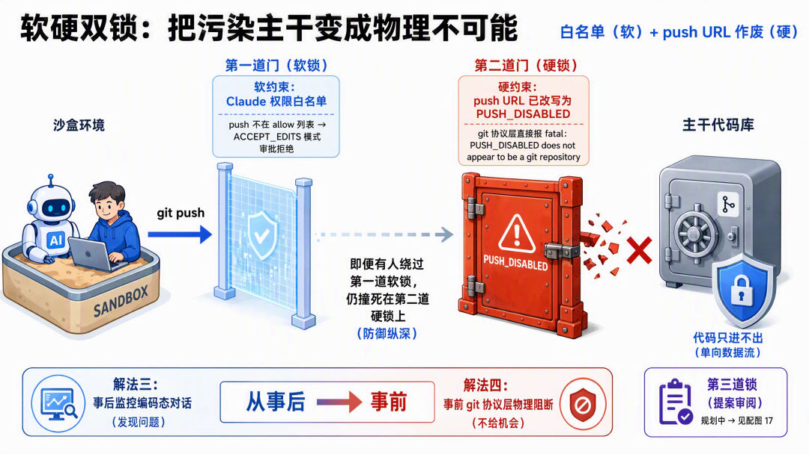
提案机制：不直接改代码，只把验收过的净改动 cherry pick 进去。前两道锁保证代码出不了沙箱，但非研发同学改满意后，改动怎样安全地进代码库？办法是「提案」（Proposal）：对话里来回改出来的东西不会直接进库，先整理成一份结构化提案（验收过的净 diff、需求、决策、验收证据），审过之后再用 cherry pick 智能合进去。另外还设计了针对不同角色的约束做法，让定制化、有约束的协作成为可能。
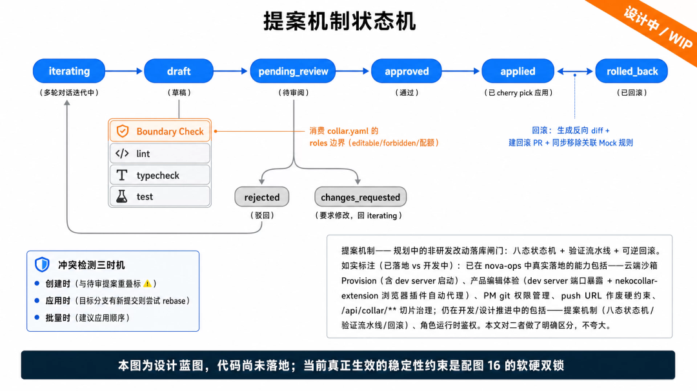
小结 · 超级项目组
原文 · 小结 - 超级项目组篇：稳定运作期做了 NekoCollar，一个云端、开箱就能用的研发上下文：效率靠云端沙箱、上下文物化、在真实页面上所见即所得地修改和 PM 规则治理；稳定性方面，已上线的是 git 协议层的软硬两道锁，提案机制和角色运行时鉴权仍在开发。这一步把 collar SDD 从本地 CLI 体系自然地推向云端多角色平台，也是团队仍在建设的终局形态。
四个阶段，四条可复用的经验
回看四个阶段，作者提炼了四条可直接复用的经验，每条都是「解法 + 原因」：
| 阶段 | 解法 | 原因 |
|---|---|---|
| 单人起步 | 建好核心的全栈上下文 | 知识库有多深，直接决定最小单位的研发效率 |
| 多人扩张 | 站点地图加 spec 变更规则 | 权责分得清不清，决定这份效率能不能横向扩散 |
| 敏捷迭代 | 建比传统模式更高维的 AI 监控 | 传统手段做不到质量和效率同时提升 |
| 项目稳定 | 建更多好用的协同链路，加上 harness 工程 | 新链路设计得如何，决定能否把效率和质量带给非研发人员 |
回到开头的主线：四步走完，AI 带来的研发能力就被一圈圈往外扩：从个体到团队，到能持续，再到全员。顺序是：一个开发者先变强，几个强者再组成会配合的团队，团队接着保持高速，最后把这份能力交到每个非研发同学手上。
最后一句：AI 能力普及之后，最宝贵的是人不故步自封、持续追求和创新的那股劲。
团队介绍
原文 · 团队介绍作者卡狸，来自淘天集团天猫技术团队。团队是淘天的技术主力，覆盖国家补贴、百亿补贴、天猫国际、天猫APP、新品孵化、天猫行业等核心业务的全链路技术，靠高并发架构、智能算法与数据能力，服务上亿消费者和百万商家。
原文最后的「拓展阅读」是公众号栏目导航（3DXR技术、终端技术等），与本文内容无关，未收录。拓展阅读